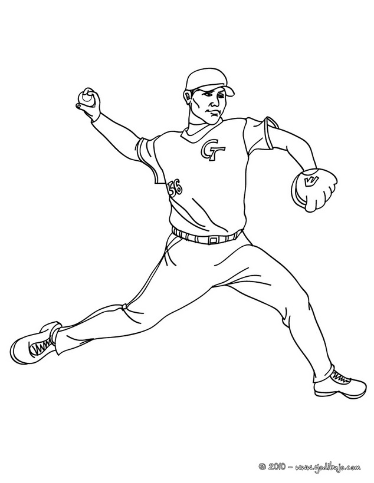
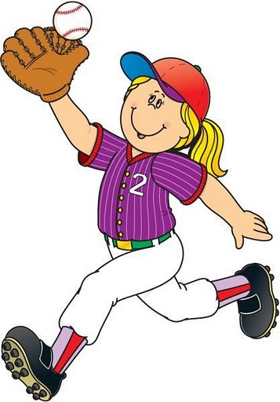

Desde los comienzos de la civilización, el hombre practicó juegos para divertirse, o para celebrar ceremonias. Y entre estas primeras prácticas, se utilizaron entre otros, los juegos con un palo y una bola. Estos juegos que aparecen en pueblos antiguos como Persia, Grecia, Egipto, se fueron practicando en mayor medida en la Europa Medieval, y fueron dando versiones distintas de juegos. Al comenzar el siglo XIX en Estados Unidos, mucha gente jugaba cricket en las ciudades, en cambio en los poblados y comunidades rurales se jugaba más el rounders que sería el antecedente directo del Béisbol, pues guarda similitudes con este deporte moderno. Se usaron varios nombres,
y los reglamentos iban variando en uno u otro lugar: fue rounders, town ball, one o' cat, y por último el que se usa hasta la actualidad: béisbol (Base Ball).
En 1982, en la ciudad de Nueva York se funda el primer club de béisbol, organizado por el joven Alexander Cartwright, y al que se le conoce como Knickerbocker Base Ball Club. Los Knickerbockers redactaron veinte reglas, publicadas en 1845, que que constituyeron el Reglamento del béisbol moderno.
El primer partido oficial en que los Knickerbockers enfrentaron a otro equipo, New York Club (hoy Hoboken de Nueva Jersey), se jugó el 19 de junio de 1846. En 1869 comenzó a jugar el primer equipo profesional de Béisbol, el Cincinnati Red Stockings.
Por la popularidad que tomó en la ciudad de Nueva York en la segunda mitad del Siglo XIX, y al ir practicándose en otros lugares, se lo conoció en esa época con el nombre de New York Game. En 1901 en Chicago (EEUU) se crea la Liga Americana de Béisbol. Ty Cobb, la sensación de Georgia, ganó su primero de nueve títulos consecutivos de bateo de la Liga Americana para establecer un récord, los Tigres de 1907 derrotaron a los Atléticos de Mack por 1-5. En 1912 se construyeron los primeros estadios: el Tiger Stadium y el Fenway Park.
El bateo es una de las habilidades más exigentes del béisbol, ya que se requiere de una coordinación de movimientos, buena vista y fortaleza muscular, para convertirse en un buen bateador.
Pitcheo

El pitcheo es un factor primordial del juego de béisbol. Muchos consideran que es el más importante, incluso por encima del bateo.
Defensa

La defensa es un factor primordial para obtener la victoria.